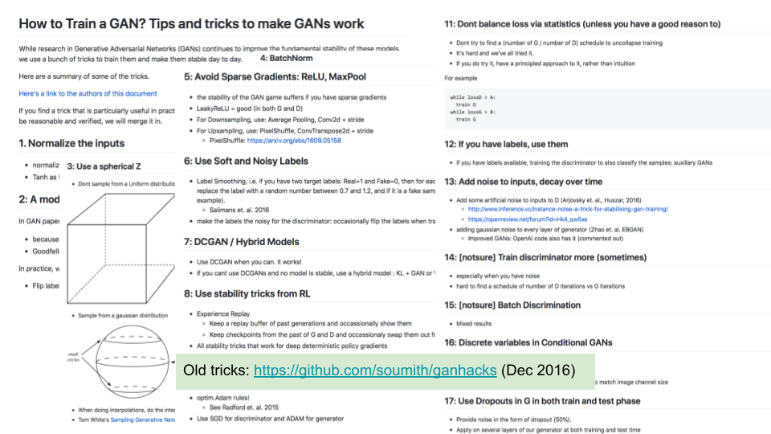
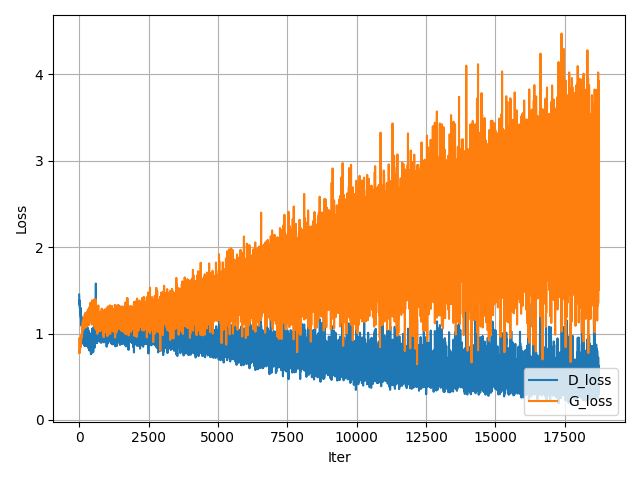
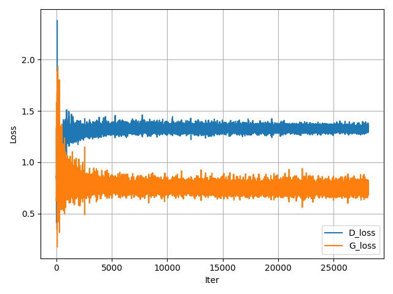
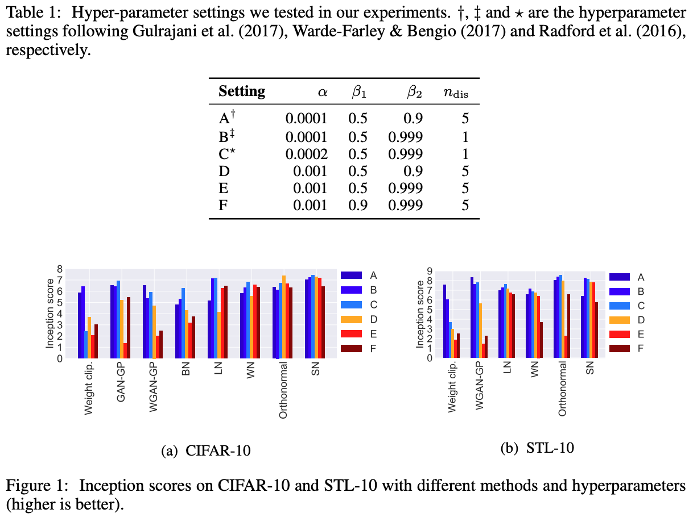

**Things you should know about GAN training**
- I expect to update this over time, both in response to feedback as well as when I find new tricks or nuggets of wisdom that are worth sharing.
- This post assumes you have some familiarity with GANs and how they work, and that you have implemented a GAN at least once. If not, you may find some sections confusing.
- Also, because I don't typically dabble with high-resolution GAN models (i.e. BigGAN, PGAN), you shouldn't expect to see any tricks on how to get those models to work. My day-to-day research often involves training GANs of a 'modest' resolution (32px, 64px), so the tricks I explain here are mostly applicable to those models.
---------
# The key ingredient to stabilising GAN training
GAN training used to involve a lot of heuristics in order for it to not exhibit some degenerate behaviour, like mode collapse or mode dropping. Commonly this meant setting up the generator and discriminator in such a way that the latter did not perform 'too well', because that would ultimately mean risking vanishing gradients from the discriminator. The worst degenerate behaviour is when the generator exhibits _mode collapse_, in which the model outputs the same image no matter what input its given. The other behaviour, _mode dropping_, requires a bit more elaboration. Sure, badly trained GANs can drop modes and this certainly effects the quality of the generative model in terms of sample diversity, but I would argue here that GANs exhibit mode dropping behaviour _by design_. This is because GANs optimise something that isn't identical to maximum likelihood, which is inherently _mode covering_ and is the mechanism by which autoencoders are trained. (See [1])
In 2017 the Wasserstein-GAN (WGAN) [2] was published and made some very interesting theoretical and empirical contributions to GANs and adversarial training, most notably in stabilising them and making them significantly less of a hassle to train. To summarise the paper -- and I hope I don't butcher this explanation -- the gist of the paper is that:
- There exist generator distributions which do not converge to the data distribution under non-Wasserstein divergences (JS, KL, etc.);
- ones that do converge under non-Wasserstein divergences converge for Wasserstein;
- the discriminator (called the _critic_ in the paper) under a WGAN gives non-saturating (clean) gradients everywhere, provided that the discriminator is [K-Lipschitz](https://en.wikipedia.org/wiki/Lipschitz_continuity) with respect to its parameters (for small `K`)
Therefore, the key thing to somehow ensure that the discriminator is K-Lipschitz (for small K). In the original paper this was done via (1) weight clipping technique, and later this was followed by (2) gradient penalty and then (3) spectral normalisation. (1) is a bit excessive, (2) is rather expensive to compute and only penalises certain parts of the function, and (3) regularises the entire function and is rather cheap to compute. In particular, spectral norm ensures that the Lipschitz constant of the network is upper bounded by _one_ (1-Lipschitz), by constraining the largest singular value for each weight matrix in the discriminator network to be equal to one.
Prior to this work, these were many tricks that I saw on how to stabilise GAN training [4]. While I don't want to say that none of these have any utility anymore whatsoever, I have not had to use any of these. I feel however that any newcomers may stumble across such things and not realise that there are more straightforward ways to train GANs now.

The simplest thing to do now is to wrap every linear and conv layer in your discriminator with spectral normalisation. I won't speak for TensorFlow but for PyTorch this is really easy:
```python
import torch
from torch import nn
# spec norm is built into pytorch, and it's very
# plug and play
from torch.nn.utils import spectral_norm as spec_norm
n_in = 10
n_out = 20
layer_l = spec_norm(nn.Linear(n_in, n_out))
layer_c = spec_norm(nn.Conv2d(n_in, n_out, kernel_size=3))
```
# Structuring the code cleanly
Clean code makes it easier to find bugs and reason about your code. Good abstractions are part of that. I like to have a `train_on_batch(x)` method, which performs a single gradient step over the batch `x`. Since GANs are a two-player game between G and D however, how do we structure the code?
Personally, I perform the G step first. But it doesn't matter which way you do it, as long as you're careful as to how you're handling the gradients. I'm going to be writing PyTorch-inspired pseudo-code (it's using Python syntax but it's not meant to be run _per se_, not unless you define a bunch of variables and implement the undefined methods I have written).
```python
####################################################################
# This code is not meant to be executed -- it's simply pseudocode. #
####################################################################
REAL = 1
FAKE = 0
def train_on_batch(x_real):
opt_g.zero_grad()
opt_d.zero_grad()
# --------------
# First, train G
# --------------
z = sample_z(x_real.size(0))
x_fake = G(z)
g_loss = gan_loss( D(x_fake), REAL)
# This backpropagates from the output of D, all the
# way back into G.
g_loss.backward()
# G's gradient buffers are filled, we can perform
# an optimisation step.
opt_g.step()
# ------------
# Now, train D
# ------------
# IMPORTANT: D's grad buffers are filled because
# of what we did above.
opt_d.zero_grad()
# x_fake.detach() not necessary here but it stops
# grads from backpropagating into G. Even if that
# did happen howwever, the start of `train_on_batch`
# zeros both gradient buffers anyway, so it doesn't
# matter.
d_loss = gan_loss( D(x_fake.detach()), FAKE) + \
gan_loss( D(x_real), REAL )
d_loss.backward()
opt_d.step()
return g_loss.detach(), d_loss.detach()
```
What if you want to do it the other way around? Easy, though I find it's a bit more confusing:
```python
####################################################################
# This code is not meant to be executed -- it's simply pseudocode. #
####################################################################
REAL = 1
FAKE = 0
def train_on_batch(x_real):
opt_g.zero_grad()
opt_d.zero_grad()
# ------------
# Now, train D
# ------------
z = sample_z(x_real.size(0))
x_fake = G(z)
# Call `x_fake.detach()` because we don't want to
# backpropagate gradients into G. If you didn't
# use detach(), then when you call `g_loss.backward()`
# later on you'd have to supply `retain_graph=True`.
# Let's not do such confusing things...
d_loss = gan_loss( D(x_fake.detach()), FAKE) + \
gan_loss( D(x_real), REAL )
d_loss.backward()
opt_d.step()
# ------------
# Now, train G
# ------------
opt_d.zero_grad()
g_loss = gan_loss( D(x_fake), REAL)
# This backpropagates from the output of D, all the
# way back into G.
g_loss.backward()
# G's gradient buffers are filled, we can perform
# an optimisation step.
opt_g.step()
return g_loss.detach(), d_loss.detach()
```
You may see in some GAN implementations the use of `backward(retain_graph=True)` in order to be able to backprop through a particular graph more than once. For instance, in the code block directly before this you would have to use `retain_graph=True` if I didn't `detach()` the tensor `x_fake` for the block that trains D. I have avoided such use of that here since I personally find it more confusing to think about.
# Easy or common pitfalls to make
- Make sure that your generated samples are in the same range as your real data. For instance, if your real data is always in `[-1, 1]` but your fake data is in `[0, 1]`, that is something that the discriminator can pick up on to easily distinguish real from fake, and could result in degenerate training. My own rule of thumb is to always do non-fancy preprocessing on the real inputs: simply put it in the range `[-1, 1]` by performing `(x-0.5)/0.5`, and make the output of your generator function `tanh`. When you want to visualise those images in matplotlib, simply denormalise by computing `x*0.5 + 0.5`.
- Batch norm can sometimes be unpredictable and result in wildly different generated images at training or test time (where in training time the batch statistics are computed over the minibatch, and at test time the moving averages are used). Usually I just use instance norm in place, of it. I've been bitten by batch norm's intracacies too many times.
# Plot your damn learning curves!
Most of the time when people come to me with GAN problems, they never come with graphs included and I usually have to ask for it. Sometimes I get no immediate response, and I wonder if it's because they have to put time in to generate those plots. It makes me wonder if the way most people debug things in deep learning is to just look at metrics flying down the terminal screen like this:
```
EPOCH: 001, TRAIN_D_LOSS: 0.4326436, TRAIN_G_LOSS: 1.352356, TIME: 435.353 SEC ...
EPOCH: 002, TRAIN_D_LOSS: 0.4521224, TRAIN_G_LOSS: 1.325623, TIME: 425.353 SEC ...
EPOCH: 003, TRAIN_D_LOSS: 0.4575744, TRAIN_G_LOSS: 1.657234, TIME: 422.533 SEC ...
EPOCH: 004, TRAIN_D_LOSS: 0.4025356, TRAIN_G_LOSS: 1.124543, TIME: 411.632 SEC ...
EPOCH: 005, TRAIN_D_LOSS: 0.4235636, TRAIN_G_LOSS: 1.457234, TIME: 450.353 SEC ...
...
...
...
```
While our field does seem like the polar opposite of classical statistics (i.e. simple linear models, interpretability, etc.), we do have something in common with classical statistics, and that is in _exploratory analysis_. Just like classical statistics, deep learning _should_ involve lots of exploratory analysis. Sure, that exploration isn't going to be on 10,000-dimensional data (we can only see in three dimensions), but it will be on variables that your model is either optimising or measuring, which is extremely important to monitor if you want to know your network is training correctly. In our case, the losses are `d_loss` and `g_loss`, which I will define in pseudocode as:
```
x_real ~ real data
x_fake ~ generator
# D wants to min the following:
d_loss_real = -log(D(x_real))
d_loss_fake = -log(1-D(x_fake))
d_loss = (d_loss_real + d_loss_fake) / 2.
# G wants to min the following:
g_loss = -log(D(x_fake))
```
In Figure 1 I have illustrated these curves, left for a regular JS-GAN and on the right a spectrally normalised variant, SN-GAN.
 
Figure 1. Left: Unregularised JS-GAN; right: JS-GAN regularised with spectral normalisation ('SN-GAN'). Note that the discriminator loss is unnormalised and should be divided by 2 here, since it constitutes two terms (`d_loss_real` + `d_loss_fake`). In that case, for the right-most figure the generator and discriminator losses for SN-GAN are roughly the same value, though typically over time they will diverge very slowly. I realise that this phenomena completely contradicts the 'Nash equilibrium' theory of GANs, which says that -- theoretically -- both networks should converge to the same loss, implying that neither network is able to reach a lower loss by fooling the other. This seems to generally not happen in practice. For more details on why, you can consult [6].
In my experience training SN-GAN (*not* JS-GAN), you want to be in a regime where the D loss is lower than the G loss but not by 'too much'. For instance, if one loss is much larger or smaller than the other, this may be indicative of something problematic. For instance, if `d_loss << g_loss` (where `<<` = significantly lower), this could mean your generator does not have enough capacity to model the data well. Alternatively, if `g_loss << d_loss`, the discriminator may not be powerful enough, either. While you could use a heuristic like roughly make both networks have the same # of learnable parameters, this can be really crude. For instance, it's expected G have way more parameters than D since it's actually trying to model the data distribution (rather than simply distinguish between the two), so it doesn't exactly set off alarm bells if your discriminator is only 5M parameters and your generator is 50M. Also, a 50M network with heavy weight decay does not have the same modeling capacity as one without it. Lastly, the issue certainly may not be in model complexity but rather the training dynamics. For example, if either network is really deep, are you making use of residual skip connections? If you're concerned with vanishing gradients, you could also plot the average gradient norms [here](https://pytorch.org/docs/stable/generated/torch.nn.utils.clip_grad_norm_.html)).
This is one of these things you will get a feel for after training lots of GANs.
# Because of Lipschitz, you don't need to cripple your discriminator
Based on what I said about K-Lipschitz, it should certainly help (and not degrade gradients in any way) to give your discriminator a head start by training it for relatively more iterations than the generator. In my own code, I simply keep track of the iteration number so that I can compute something like the following:
```python
def train_on_batch(x, iter_, n_gen=5):
# Generator
...
...
if iter_ % n_gen == 0:
g_loss.backward()
opt_g.step()
# Disc
...
...
d_loss.backward()
d_loss.step()
```
Where `iter_` is the current gradient step iteration, and `n_gen` defines the interval between generator updates. In this case, since it's `5`, we can think of this as meaning that the discriminator is updated 5x as much as the generator.
Other people may do something like the following, preferring to leverage the data loader to perform such a thing:
```python
def train(N):
# number of discriminator iters per
# generator iter
n_dis = 5
for iteration in range(N):
for x_real in data_loader:
# Update G
train_on_batch_g(x_real)
for _ in range(n_dis):
for x_real in data_loader:
# Update D
train_on_batch_d(x_real)
```
# Optimisers
The only optimiser I've really used for GANs is ADAM, and it seems like everyone else does as well. I don't know why it works so well, but maybe it's because all of our models have evolved over time to perform well on ADAM [7], even if it may not necessarily be the right optimiser to always use.
The spectral normalisation paper [8] presents a neat paper on various ADAM hps that they tried out, and which ones gave the best Inception scores:

Figure 2. (Taken from [8].)
As one can see here, for SN-GAN, option (C) performs best for CIFAR10 and option (B) for STL-10. Unfortunately however, as that graph shows, you can get wildly different optimal hps depending on what kind of GAN variant you are working with. In my own experience, I have found `betas=(0, 0.9), lr=2e-4` to be a reasonable starting point.
## Pesky hyperparameter: ADAM's epsilon
ADAM's default `epsilon` parameter in PyTorch is `1e-8`, which may cause issues after a long period of training, such as your loss periodically exploding or increasing. See the StackOverflow post [here](https://stackoverflow.com/questions/42327543/adam-optimizer-goes-haywire-after-200k-batches-training-loss-grows) as well as the Reddit comments [here](https://www.reddit.com/r/reinforcementlearning/comments/j9rflf/intuitive_explanation_for_adams_epsilon_parameter/).
# Evaluation metrics
The two most commonly used metrics are Inception and FID, though there have been a whole host of other ones proposed as well. Unfortunately, these metrics can often be rather frustrating to use, and I will detail as many reasons as I can for this below.
Here are some things you should keep in mind about FID:
- Depending on how FID is calculated, it may only be appropriate to use it as a measure of underfitting, _not_ overfitting. Looking at the code of [pytorch-fid](https://github.com/mseitzer/pytorch-fid), which in turn is based on [test](https://github.com/bioinf-jku/TTUR), the [pre-computed FID statistics](http://bioinf.jku.at/research/ttur/) for a particular dataset may be based on either the training set, the validation set, or both sets. For CIFAR10, it looks like it's the training set. This means that if your generative model 'cheated' and simply memorised the training set, you'd get an FID of _zero_. I don't know what % of GAN papers compute FID on train/valid/test but this seems like a rather annoying confounding factor.
- Like Inception (see above), these scores are different depending on what pre-trained weights are used for the Inception network, which typically differ depending on whether the implementation is in PyTorch or TensorFlow. It seems like [pytorch-fid](https://github.com/mseitzer/pytorch-fid) now uses the same weights as the Inception network in TF, but I recall a few years back having to use a different set of weights for PyTorch with this code. I managed to dig up some old numbers where I evaluated various hyperparameters of a GAN I trained using both TF and PyTorch implementations, and got wildly different results (see Appendix).
There are other problems too. See 'A note on the inception score' [5] for a comprehensive critique of these scores.
## Which is the best?
Ultimately, I feel like whatever evaluation metric you use really depends on what your downstream task is. If you just want to generate pretty images then sure, use something like FID or Inception. If however you are using GANs for something like data augmentation, then an appropriate metric would be training a classifier on that augmented data and seeing how well it performs on a held-out set.
# Resources
- [PyTorch generative model collections](https://github.com/znxlwm/pytorch-generative-model-collections). Figure 1's JS-GAN was trained with this repo, spectral normalisation was added to the code by wrapping each linear and conv definition in `GAN.py`.
# References
- [1]: https://colinraffel.com/blog/gans-and-divergence-minimization.html
- [2]: Arjovsky, M., Chintala, S., & Bottou, L. (2017, July). Wasserstein generative adversarial networks. In International conference on machine learning (pp. 214-223). PMLR.
- [3]: Gulrajani, I., Ahmed, F., Arjovsky, M., Dumoulin, V., & Courville, A. (2017). Improved training of wasserstein gans. arXiv preprint arXiv:1704.00028.
- [4]: https://github.com/soumith/ganhacks
- [5]: Barratt, S., & Sharma, R. (2018). A note on the inception score. arXiv preprint arXiv:1801.01973.
- [6]: Farnia, F., & Ozdaglar, A. (2020, November). Do GANs always have Nash equilibria?. In International Conference on Machine Learning (pp. 3029-3039). PMLR.
- [7]: https://parameterfree.com/2020/12/06/neural-network-maybe-evolved-to-make-adam-the-best-optimizer/
- [8]: Miyato, T., Kataoka, T., Koyama, M., & Yoshida, Y. (2018). Spectral normalization for generative adversarial networks. arXiv preprint arXiv:1802.05957.
-------
# Appendix
## The relationship between PyTorch and TF Inception scores
```python
import pandas as pd
import matplotlib.pyplot as plt
%matplotlib inline
df = pd.read_csv("./incep_tf_vs_pt.csv", names=["pytorch", "tensorflow"])
df
```